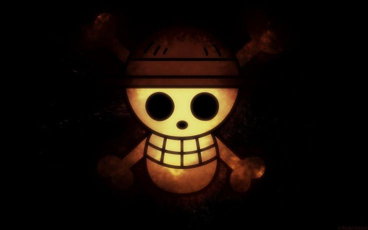

O Bando dos Chapéus de Palha é o grupo central da série One Piece, criada por Eiichiro Oda. Liderado por Monkey D. Luffy, um jovem pirata com o sonho de se tornar o Rei dos Piratas, o bando é conhecido por sua coragem, laços de amizade inquebráveis e determinação em conquistar o lendário tesouro conhecido como One Piece.
A jornada do bando começa quando Luffy parte sozinho para o mar, após herdar um chapéu de palha de seu ídolo, Shanks, um poderoso pirata do Novo Mundo. Aos poucos, Luffy recruta companheiros com diferentes habilidades, sonhos e passados marcantes. Cada membro traz uma contribuição única ao grupo, e todos compartilham a vontade de alcançar seus objetivos enquanto seguem ao lado de Luffy.
Ao longo da aventura, o Bando dos Chapéus de Palha enfrenta poderosos inimigos, como a Marinha, os Shichibukai, e os Yonkou, e forma alianças com outros piratas, revolucionários e até reinos inteiros. Eles passam por grandes sagas, como a Saga de Alabasta, Enies Lobby, Marineford, Ilha dos Tritões, Wano e muitas outras, sempre mantendo sua promessa de nunca abandonar um amigo ou desistir de seus sonhos.
Mais do que piratas, os Chapéus de Palha representam a luta pela liberdade, pela justiça e pela amizade verdadeira. A sua jornada continua enquanto navegam pelo Novo Mundo, cada vez mais perto do destino final: a ilha de Laugh Tale, onde o One Piece está escondido.